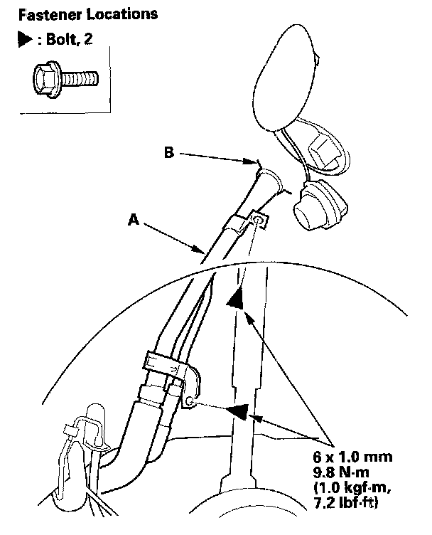
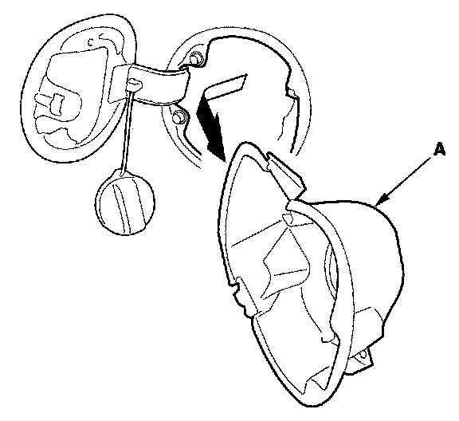

Fuel Door: Service and Repair
Fuel Cap Adapter ReplacementNOTE: Take care not to scratch the body.
1. Remove these items:
- 2-door: Remove the lid.
- Fuel cap grommet.
2. Remove the fuel cap by turning it counterclockwise.

3. Remove the bolts, and lower the fuel filler pipe (A), then remove it from the fuel cap adapter (B).

4. Turn the fuel cap adapter (A), then remove it.
5. Install the adapter in the reverse order of removal.